少样本时序引导提升机器人动作模型
SteerAct 用共享 SAE 特征与少样本成功/失败 rollout，在推理时定向调节单个稀疏特征，任务成功率相对提
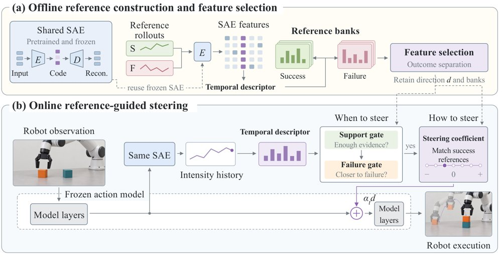
SteerAct 总览：离线用拟合冻结策略激活的 SAE 与带结果标签的 rollout 选出特征并建立成功/失败参考库，在线只对受支持的失败样前缀搜索带符号系数，再由选定解码方向改写一处残差流并交给冻结策略输出动作。
解决了什么问题。预训练 VLA 与世界-动作模型在下游操作任务上并不总是可靠，而可用的机器人 rollout 往往很少，难以把有限的执行经验转化为行为纠正。已有的推理时干预方法要么扰动扩散/流策略的初始噪声，要么直接修改内部激活或子空间，但没有解决两个关键问题：从少量 rollout 中该选哪个特征，以及在新一次执行中何时、以多强幅度修改它。
方法。SteerAct 用一个预训练稀疏自编码器（SAE）把冻结策略的隐藏激活分解为稀疏特征，每个特征带一个解码方向用于干预。核心表示是「时间激活模式」的分布：只看短窗口内激活值的相对次序，因此跨 rollout 比较时不需要时间步对齐。离线阶段用成功与失败的参考 rollout 构建参考库，选出结果区分度最高的单个任务专属特征；在线阶段把当前执行的描述子与参考库比较，决定干预时机和带符号的 steering 系数，并由时序支持度分数门控，证据不足时不干预。整个过程中动作模型与 SAE 的权重都保持冻结。
关键结果。在模拟环境中，每个任务只使用 24 条带结果标签的参考 rollout：覆盖 π0.5 与 Fast-WAM 两个骨干、RoboTwin 2.0 与 DexJoCo 各 9 个任务，共 36 个任务-骨干设置，另加 3 个真实机器人任务（π0.5），任务成功率相对未干预模型提升约 10%。在 DexJoCo + π0.5 上，SteerAct 在所评估方法中取得最高平均成功率。实验在单张 NVIDIA RTX 6000 上运行。论文未给出逐任务的绝对成功率具体数字。
为什么值得看。它表明冻结动作模型内部的单个稀疏特征就可以充当轻量适配接口，不必更新权重、也不必额外训练强化学习控制器，为「用少量执行经验快速纠偏」提供了一条可解释的路径。
局限 / 存疑。作者自述仍存在性能回退，且效果依赖具体骨干模型；方法需要每个任务 24 条带结果标签的参考 rollout 和一个预训练 SAE，论文未给出逐任务绝对数字与失败案例的定量分析，跨任务、跨 embodiment 的泛化性仍待验证。
模型可解释性、模型内部机制
机器人 & 具身智能
alphaXiv · arXiv
证据先行的智能体验证器在多项基准领先
Scale AI 的 Sauron 先独立核验状态与轨迹中的证据再下判定，在八个骨干模型上 F1 均最高、成本更低。
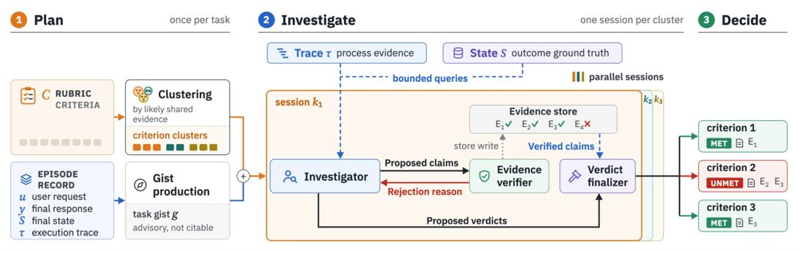
Sauron 架构：两步轻量规划按可能共享的证据对准则聚类并生成提示性任务提要，每个簇并行开展一次调查会话，调查员经有界查询访问轨迹与状态并提出 claim，证据核验器逐条对照来源校验后写入证据库，判定终结器只在已验证 claim 支持时接受判定，每条准则都附证据收据。
解决了什么问题。长程、半可验证的智能体任务常用评分准则（rubric）来评判，但判断所需的证据分散在最终环境状态和执行轨迹里，常规模板式 LLM 评审只能看到被放进输入的那部分证据。评审可能找错地方漏掉证据，或接受没有来源支撑的说法，其中就包括智能体自己声称的成功。当准则判定被当作强化学习奖励时，这类错误会直接强化不良行为，形成奖励攻击。
方法。Sauron 把「调查」与「核验」拆成两步：轻量规划模型按可能共享的证据把准则聚类并生成任务提要，每个簇由一名调查员通过有界查询按需读取状态、轨迹和产物，提出待验证的 claim。独立的证据核验器用定位符取回原始来源，精确声明做机械比对，解释性声明交给只能看到该声明与引用片段的隔离忠实性检查器，被拒的 claim 会带原因退回。最终只有已验证 claim 支持的判定才被终结器接受，每条准则都附带列明证据的收据。
关键结果。在含 2,586 条人工标注准则的 100 个个人助理 episode（PA100）上，Sauron 在全部八个骨干模型上取得五个验证器中最高的 F1，且成本低于最强基线 Gandalf；以 GPT-5.6 Sol 为例，F1 为 0.96 对 0.92、MCC 0.94 对 0.89，成本低 23%，过程类准则上为 0.97 对 0.90。在 13 个故障族、637 对故障-对照的 PAFault 上，它检出 97% 的注入故障、只误报 2% 的干净对照（Δfault=0.95），而拿到完整轨迹的 Gandalf 与 Autorubric 分别只有 0.67 和 0.71。TRAIL 上以 GPT-5.6 Sol 跑 GAIA 子集，wF1、定位准确率、联合准确率分别为 0.53、0.73、0.44，高于两个基线的 0.46、0.55、0.25。
为什么值得看。如果准则判定要当 RL 奖励用，验证器就必须把判定钉在可核查的证据上，而不是相信智能体的自述，否则策略会学会只把报告写得漂亮。Sauron 的 claim 级核验加证据收据给出了一条可审计、成本可控的路径。
局限 / 存疑。实验只覆盖英文任务，PA100 与 PAFault 均来自单一智能体（Opus 4.8）的个人助理场景；故障注入是人工构造的，并不能证明它对专门针对 Sauron 优化的策略依然稳健。在 TRAIL 上 Sauron 成本是基线的两到三倍，作者也承认有界查询在需要覆盖整条轨迹的错误检测任务上省不了多少；65 例与人工判定不一致的案例中有 48 例源于判读比标注者更严格。
AI 智能体 Agent / 自主智能
alphaXiv · arXiv
用LoRA微调104B主干做大脑编码
冻结主干加读出渐遇瓶颈；作者用LoRA适配104B多模态主干，九个主干均提升，集成模型登顶Algonauts赛后榜。
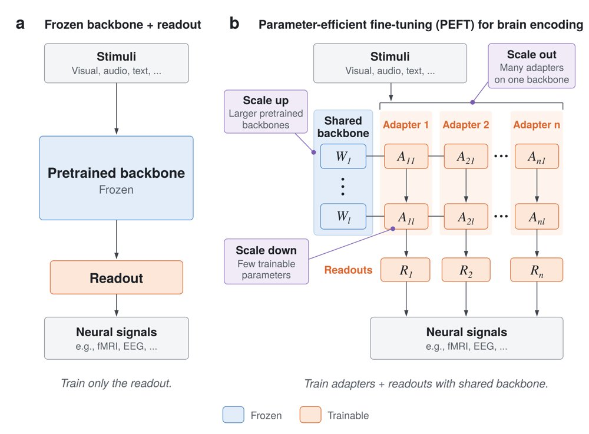
从冻结主干到PEFT：作者提出放大、缩小、扩展三条规模化路径，分别对应更强的主干先验、更小的适配器和更多不同专长的适配器。
解决了什么问题。当前最强的脑编码模型大多采用「目标驱动」范式：把在行为任务上预训练的大模型冻结，只从神经数据学习一个读出层。这样虽能利用强大的预训练先验，却无法让主干针对脑编码做特化；而神经数据昂贵稀缺，从头训练小模型尚未在全脑人类基准上达到SoTA，已有工作报告全量微调反而不如冻结主干。
方法。作者改用参数高效微调（PEFT）：在Qwen3-Omni的注意力模块中插入rank-16的LoRA，并只保留到第32层解码器，搭配线性或交叉注意力读出，训练后再对线性读出做闭式岭回归重拟合。为降低计算开销，他们利用主干的因果结构，一次前向预测多个时间点，取代滑动窗口，从而大幅减少特征提取成本；此外还实现了批量多LoRA内核，可在同一共享主干上联合训练大量适配器。
关键结果。方法在九种多模态主干上一致提升脑编码性能，最大适配到104B参数，为目前已报道适配脑编码的最大模型。主配置在Qwen3-Omni上仅引入8.91M个LoRA可训练参数，读出为52.3M参数；交叉注意力读出把约19.3k个token池化为894个向量，交叉注意力版本改用约3.2k个token、只增加0.2M参数。在与先前SoTA相同的Qwen3-Omni主干上，BrainLoRA成为已发表方法中的新SoTA，但摘要与引言未给出具体提升数值，论文未给出具体数字（种子间波动阈值为0.00077）。用批量多LoRA训练出200多个独立适配模型，其集成在Algonauts赛后公开榜单排名第一，超过未发表条目；在1,000个脑区、四名被试的CNeuroMod/Algonauts 2025数据上评测。
为什么值得看。它把「一个强预训练主干」变成「一族专用脑编码模型」：不改动主干权重就能特化，还能廉价地批量复制出集成所需的大量模型；特征归因显示适配后仍保留视觉—听觉的经典地形，只是音频贡献与跨模态混合增强，说明性能提升并非以可解释性为代价。
局限 / 存疑。评测只覆盖一个基准、四名被试，且全部是观看视听叙事影片（《老友记》）；适配器虽能迁移到留出被试和第二个数据集，但都未离开叙事影片这一域。另外，摘要未报告相对先前SoTA的具体提升幅度，部分读出消融（如门控MLP读出+0.0007、池化特征上的交叉注意力+0.00030）落在0.00077的种子波动内，无法可靠区分。
模型可解释性、模型内部机制
时序数据 & 科学 AI
alphaXiv · arXiv
Interlock：用完成图约束长程任务合成
Interlock 把长程任务表示为带类型的完成图，再编译成工作区、请求与评分标准，只保留全部要求达成的执行轨迹用于微调
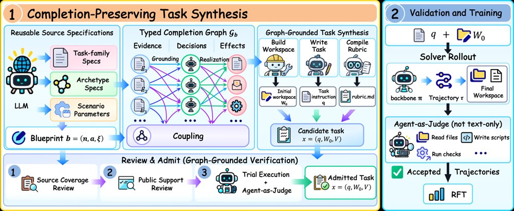
Interlock 流程：左侧把完成图编译成工作区、请求与评分标准，并做来源覆盖与公开支持复核；右侧真实执行任务，由 agent-as-judge 判定并保留通过的轨迹用于各 backbone 自己的微调。
解决了什么问题。长程智能体常在碎片化证据和半完成状态中工作，可能满足了单条要求，却漏掉这些要求之间的关系：决策是否真有证据支撑、多个决策能否同时成立、决策是否落实到所有下游产物。这类「局部正确、整体未完成」的失败，根源是任务完成取决于证据、决策与所需效果之间的条件性义务，而现有任务合成多围绕工具依赖或技能关系组织生成。
方法。Interlock 把每个任务写成带类型的完成图：grounding 边把公开证据和规则连到决策，coupling 超边给出跨组件的联合约束，realization 边列出决策必须产生的下游效果；三个生成角色再把同一张图编译成初始工作区 W0、公开请求 q 和私有评分标准 V。随后做两类互补复核（成果保留性检查与公开输入支持性检查），并用有终端权限的 agent-as-judge 实际执行、按需写并运行验证脚本，只把全部必需 criteria 通过的轨迹留作 rejection-sampling 微调。
关键结果。语料保留 3,278 个任务（覆盖 128 个 domain、484 个 task family），两个 backbone 各 5 次尝试共 32,780 次执行，其中 32,370 次正常终止，每个 backbone 各取 8,957 条自己接受的轨迹、约 154M 监督 token。相对原 checkpoint，Qwen3.6-27B 的 AutomationBench 任务通过率由 14.33% 升至 18.33%（+4.00 个百分点），JobBench Main/Easy 加权分分别 +4.35、+6.64，Harvey LAB criterion 通过率 73.96%→77.85%（+3.89）；Qwen3.6-35B-A3B 分别为 9.00→13.50（+4.50）、+3.20 与 +4.31、54.18→58.34（+4.16）。合成轨迹平均 84,293 token、27.63 个 assistant turn、42.10 次工具调用，约为 ClawGym 轨迹（14,940 / 11.92 / 14.76）的 5.64×、2.32×、2.85×；把文本 judge 换成 agent-as-judge，判官平均输出从 11.03k token 升到 12.28k token（+11.3%）。
为什么值得看。它把「任务完成」建模成证据、决策与下游效果之间的条件性义务，而不是一组互相独立的 criterion，并初步证明这种从完整合成执行中学到的经验能迁移到三个独立编写的外部基准。若成立，就为长程智能体提供了一条不依赖人工标注、可规模化的训练数据路径。
局限 / 存疑。增益都是个位数百分点，AutomationBench 上两个 backbone 的绝对通过率仍只有 18.33% 和 13.50%，JobBench 两个子集各仅 65 个任务，且 JobBench 与 Harvey LAB 均由 GPT-5.5 担任 judge；论文未给出主结果在多次运行下的方差或显著性检验。此外，任务由 LLM agent 合成和审核，作者没有报告评审漏放的比率，评测本身也部分依赖模型判分。
AI 智能体 Agent / 自主智能
alphaXiv · arXiv
RSIFlow：元智能体自进化编排改进工作流
六个基准、两个骨干上 11/12 设置领先，总体 51.21% 与 59.86%，比最强基线高 6.06 与 3.86
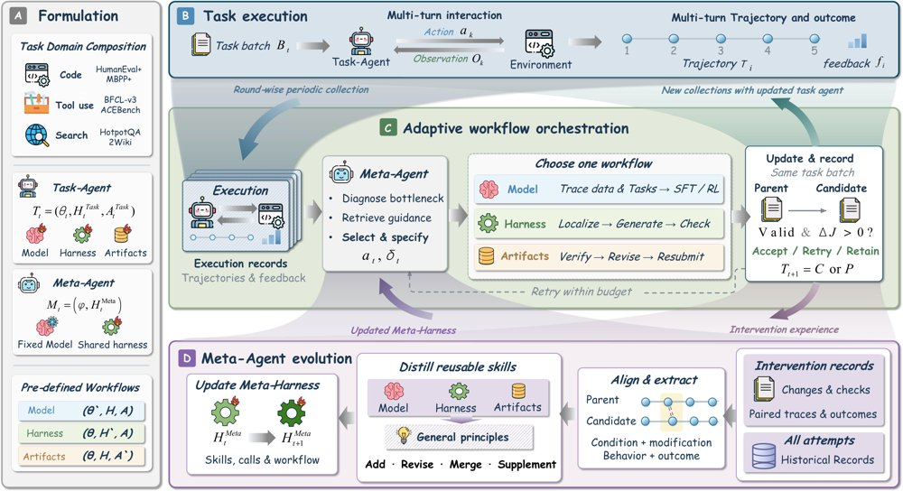
RSIFlow 总览：任务智能体执行任务并采集轨迹与反馈，元智能体检索技能自适应编排工作流，工作流结果被蒸馏为技能、原则与 Meta-Harness，更新后的 Meta-Harness 指导后续编排，闭合递归自我改进回路。
解决了什么问题。递归自我改进（RSI）把优化对象从任务能力扩展到改进机制本身，但现有方法多在预设组件或固定的模型—harness 交替顺序上做更新。性能瓶颈会随任务要求和智能体当前能力状态漂移，而「如何组织改进流程」本身也是一种可随经验提升的能力，二者如何耦合仍是开放问题。
方法。RSIFlow 让任务智能体执行任务、收集轨迹与环境反馈，元智能体据此诊断瓶颈，在 Model、Harness、Artifacts 三种组件特定改进工作流中选择其一，并编排候选的生成与验证；每轮最多两次尝试，首个有效且配对增益为正的候选被接受，否则沿用父代。随后系统把编排结果蒸馏为组件特定技能与跨组件原则，用来改写元智能体自身的 Meta-Harness（执行接口、技能检索与调用），而元智能体的模型参数始终固定。
关键结果。在 HumanEval+、MBPP+、BFCL-v3、ACEBench、HotpotQA、2Wiki 六个基准和 Qwen3-4B、Qwen3-8B 两个骨干上，RSIFlow 在 12 个基准—骨干设置中 11 个领先，总体得分 51.21%（4B）与 59.86%（8B），分别超过最强基线 6.06 和 3.86 个百分点，平均每指标高 3.11%。HumanEval+ 上 4B 的 pass@1 提升 14.02%，MBPP+ 两骨干平均提升 3.91%，2Wiki 的 F1 两骨干平均提升 5.20%，8B 在 HotpotQA 上提升 6.38%。消融中，自适应编排比固定组件工作流平均高 4.13%–8.81%，禁用元智能体进化使平均性能下降 5.74%；五轮案例沿 Harness–Harness–Model–Model–Artifacts 序列从 32.23% 升到 51.21%（+18.98%），其中第三、四轮分别用 3,798 和 5,397 次 replay 调用做 LoRA 微调。
为什么值得看。它把「改进流程本身」当作可学习对象：不再预设该改模型还是改 harness，而是让元智能体依据执行反馈选择干预范围，并把成功与失败经验沉淀为可复用技能。这为 RSI 提供了一条不更新元模型参数、只演化 harness 的实现路径。
局限 / 存疑。实验只覆盖 Qwen3-4B/8B 两个较小骨干，更大模型与集群规模下收益是否保持尚未验证；元智能体参数固定、靠改写 harness 进化会带来额外算力开销，论文也承认经验驱动的 Meta-Harness 更新稳定性有待研究，且案例研究未隔离单个技能的因果贡献。
基础大模型 & 基础模型底层研究
AI 智能体 Agent / 自主智能
alphaXiv · arXiv
递归智能体学会给自己写评分标准
SERA 让递归智能体在委派子任务前写出加权评分标准，用验证结果训练它，再把自评分当作密集执行奖励。
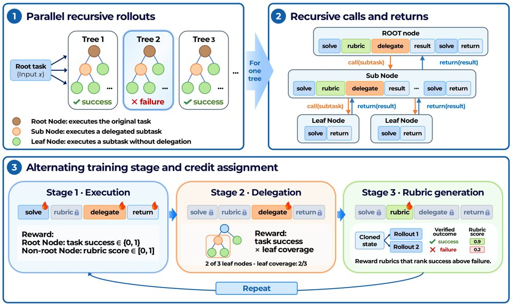
基于 rubric 轨迹打分的递归智能体优化：共享策略的根智能体递归委派子任务，每条完成的子智能体轨迹可同时获得 rubric 奖励与程序或 LLM 裁判奖励。
解决了什么问题。递归智能体把任务拆开、交给同一策略的子实例执行，最终结果可以验证，但中间那些自己发明的子任务没有标准答案。现有做法用验证器或 LLM 裁判给每个节点打二值分：信号粗糙、全树调用代价高，而且完全没有评价「拆得对不对」。
方法。SERA 把评估变成策略自身的一项能力：父节点在子任务执行前生成一份冻结的加权评分标准（rubric），子任务结束后由同一策略按标准打出连续分数，作为该节点的执行奖励；外部验证器或裁判只用来训练 rubric 生成器，方法是要求它对同一子任务的多次反事实 rollout 按验证结果正确排序。另设 leaf-coverage 奖励，按一次委派所组织的叶子节点占整棵树的比例给分解决策记功。三路信号以 16:2:2 的更新比例交替优化共享权重。
关键结果。在 TextCraft-Synth 上平均成功率 74.31%（列第二），在 TextWorld-Sync 上 65.07%（列第一），分别比递归智能体基线 RAO 高 5.38 和 13.14 个百分点。去掉 rubric 训练的版本只有 72.26% 和 51.10%，说明增益主要来自 rubric 训练本身；分解奖励在 TextWorld-Sync 上再加 4.81 点，其中 Hard +8.58、Extreme +17.43，但在 TextCraft-Synth 上反而低 0.53 点。外部监督方面，TextCraft 的程序验证器调用从 550.94K 降到 257.96K（约 2.1 倍），TextWorld 的裁判调用从 147.80K 降到 35.79K（4.1 倍），输入 token 从 633.80M 降到 125.32M（5.1 倍）。推理时用学到的 rubric 做自底向上树搜索选择，TextWorld-Sync 上再从 65.07% 提升 2.43 点至 67.50%，与外部 Kimi-K3 裁判的 67.29% 基本持平。
为什么值得看。它把「评价子任务」当成和「拆解」「求解」并列的第三种可训练能力，而不是外挂一个裁判，从而在减少外部监督调用的同时提高了执行质量；学到的 rubric 还能在推理阶段复用为树搜索的选择器。
局限 / 存疑。实验只覆盖 Qwen3-4B 和两个合成文本基准，更大模型与真实任务尚未验证；评估与执行共享权重，自评分存在偏离真实成功的风险，目前靠验证结果锚定 rubric 训练来缓解，但验证更稀疏或更嘈杂时的稳健性仍未解决。此外 leaf-coverage 对所有叶子等权，且 TextWorld-Sync 上训练耗时 24 小时 14 分，长于 RAO 的 13 小时 08 分。
基础大模型 & 基础模型底层研究
AI 智能体 Agent / 自主智能
alphaXiv · arXiv
HarnessPro：以帕累托优化兼顾性能与成本
无需真值标签的智能体框架自改进方法：多智能体诊断轨迹，按性能-成本前沿挑选候选，提升通过率同时降低单任务成本。
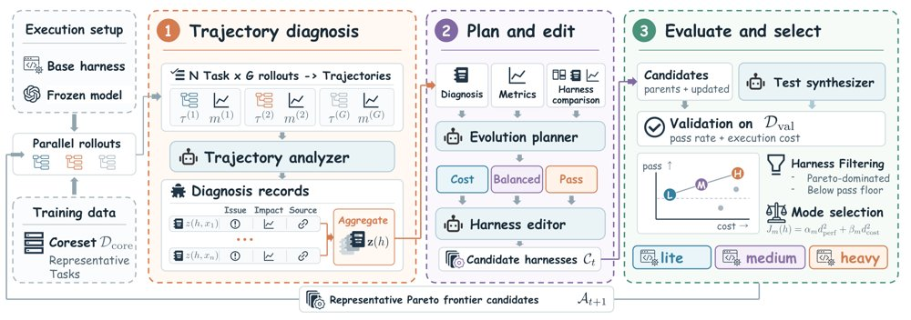
HarnessPro 的整体流程：每个 epoch 分析 rollout 轨迹、生成候选框架，并依据性能与成本挑选代表性候选。
解决了什么问题。智能体框架（harness）决定了大模型与环境如何交互，近期用递归自改进（RSI）来优化框架的工作往往靠更长的探索和更强的验证换取性能，代价是 token 消耗与延迟上升。在实际部署中执行成本和延迟同样是硬约束，因此作者提出的问题是：递归式框架自改进能否在更低成本下取得更好性能。
方法。HarnessPro 是一个无需标签的框架自进化流程：专用智能体分析多次 rollout 的执行轨迹，定位失败模式与可避免的开销，再由规划器按不同的性能-成本优先级生成更新方案，并实现为候选框架。候选框架用 LLM 生成的测试来评估，不接触标准答案或官方测试。方法不返回单一框架，而是保留一组位于性能-成本前沿的代表性候选（Pareto 选择），并提供 Lite、Medium、Heavy 等不同取舍的档位。
关键结果。作者以 RHO 为主要对照：在 SWE-Bench Pro 上 RHO 虽然提升通过率，但单任务平均成本从 1.88 美元升至 2.68 美元，上涨 42.6%。结果表中，HarnessPro-Heavy 在第一组基准上达到 80.8% 通过率、平均成本 0.72 美元、单次通过成本 0.89 美元，而 RHO 为 76.3%、1.09 美元、1.43 美元；在第二组基准上 Heavy 为 80.7%、1.97 美元、2.44 美元，RHO 为 80.0%、2.68 美元、3.35 美元。较轻的 Lite 档在这两组基准上分别为 72.9%/0.43 美元与 72.3%/0.80 美元。消融显示规划器与测试合成器都不可缺少：去掉规划器后 Heavy 从 80.8% 降至 79.7%，去掉测试合成器后降至 74.6%。
为什么值得看。它把「自改进」的评价标准从只看通过率改成同时看性能与执行成本，并用帕累托前沿给出多档可选方案，这更贴近智能体真正上线时的工程约束。
局限 / 存疑。成本数字依赖具体模型版本与 API 定价，换环境后未必可迁移；候选评估完全依赖 LLM 生成的测试，这些测试与官方测试的一致性论文未给出具体数字，因此「无标签评估」的可信度仍待验证。此外，去掉规划器或测试合成器都会明显掉点，说明收益高度依赖这套多智能体流水线自身的复杂度与开销。
AI 智能体 Agent / 自主智能
AI 工程、推理部署、系统方向
alphaXiv · arXiv
真实运筹项目上LLM智能体综合质量不及专家
31个真实付费运筹项目、11个前沿LLM智能体：最强配置严格可行率88.39%，但综合质量仍低于专家。
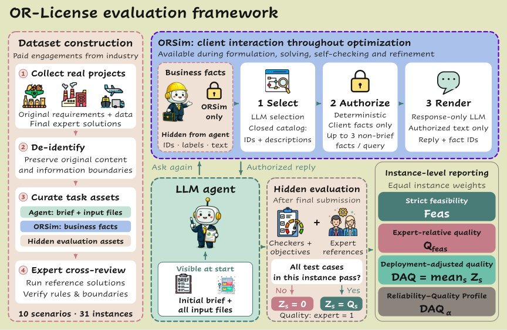
评测框架：专家从真实运筹项目中整理任务与参考解，智能体在求解全过程中可向客户提问，最终提交由隐藏评测检验可行性与相对专家的方案质量。
解决了什么问题。现有运筹（OR）基准大多从自包含的问题描述或预先定义好的优化任务出发，因此没有覆盖「把原始商业材料翻译成经专业验证的可执行方案」这一环节。而真实部署中，专家必须先做需求获取、问题形式化、求解策略选择与求解器实现，才能交付系统。论文要问的是：LLM智能体能否直接从原始客户材料出发，做到专家级交付。
方法。作者构建了 OR-License 端到端基准，涵盖10个工业场景的31个实例；脱敏后保留原始需求、输入数据、交付格式与信息边界；参考解由专家筛选，并且是客户在基准构建前已接受的方案。为评估求解过程中的信息获取，论文还提出 ORSim 受控客户模拟器，它只披露业务事实，不提供运筹专业知识。评测采用隐藏方式，检验交付可行性，并比较目标质量与专家解；部署调整质量（DAQ）按实例对专家相对质量取平均，不可行交付记零分。11个前沿 LLM 在编码智能体框架中运行（Harbor 0.18.0，Claude Code 2.1.278 / Codex 0.155.1），最多500轮交互，墙钟上限12小时，单次求解调用限3600秒。
关键结果。基准覆盖10个工业场景的31个实例，来自付费运筹项目，项目总值368万美元。11个前沿 LLM 在编码智能体框架下评测：若干模型在「条件目标质量」上超过专家参考解，但没有一个在 DAQ 上追平专家。最强的主 Claude Code 配置达到88.39%严格可行率，DAQ 为0.87，专家参考为1。轨迹分析显示失败同时出现在问题形式化与实现环节，按任务对齐统计的研究链完成率在可评测任务上为24%至45%。客户信息获取并不止于初始澄清，还延伸到方案开发与验证阶段，部分较晚阶段的已确认问题解决比例更高。
为什么值得看。它把评测锚定在真实付费项目与客户已接受的解上，说明高价值运筹落地的瓶颈不只在建模与求解，还在于持续消除与客户之间的信息差、忠实形式化问题。这为长程智能体提供了一个更贴近部署的考核方式，而不只是做数学建模题。
局限 / 存疑。样本仅31个实例、10个场景，且全部来自可脱敏、可交付评测的付费咨询项目，泛化性有限。隐藏评测只检查可行性与相对专家解的目标质量，而专家解是被客户接受的单一方案、并非最优解；评测也绑定特定编码智能体框架与 harness 版本，换配置后结论可能变化。
AI 智能体 Agent / 自主智能
alphaXiv · arXiv
物理RSI能力从哪来：五轴评测与观测缩放
Galbot团队提出PhysRSI-eval，用固定交互预算在18个双臂操作任务上拆解LLM智能体的物理自我改进能力。
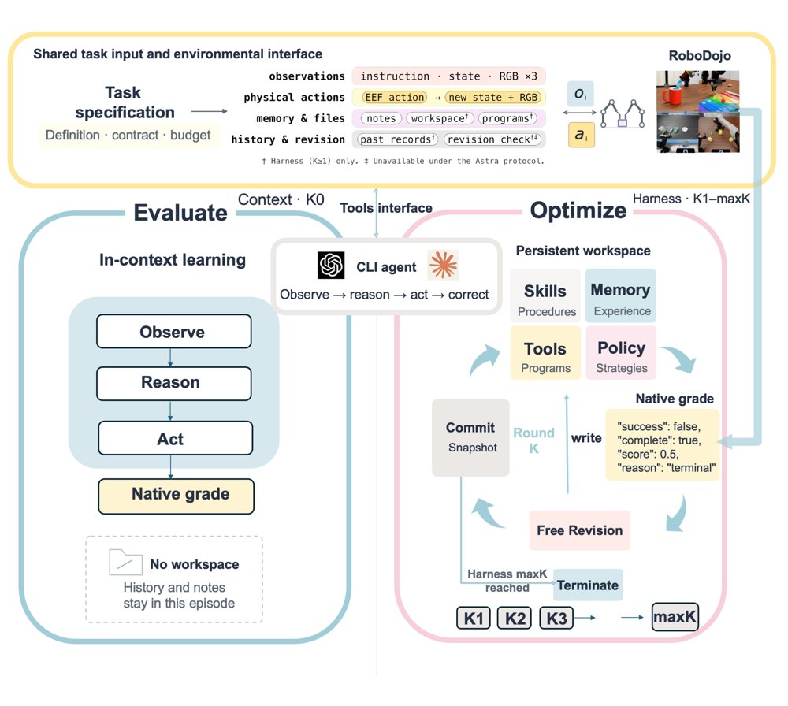
两阶段共用一套机器人接口：左侧K0为无工作区的单次首试，右侧K1–K17每轮从持久工作区出发，经原生评分后在动作关闭状态下修改并提交，直到首次成功或轮次用尽。
解决了什么问题。前沿LLM智能体已能通过试错改写代码、工具与记忆来提升操作能力，但单看最终分数看不出这种「物理递归自我改进」从何而来，也分不清它是早早到手还是靠更多物理尝试堆出来的。论文追问三件事：能力来源是什么、改进如何随模型能力和交互预算缩放、提升究竟是过拟合练习场景还是可迁移。
方法。PhysRSI-eval在RoboDojo的18个双臂任务上跑两阶段循环：先做无工作区的K0首试，再进入最多H=17轮的自改进，每轮一次带原生评分的物理尝试，随后在机器人动作关闭的状态下修改持久工作区。评测用五轴指标分开度量首试表现、增益出现早晚、最终得分、物理预算节省和从失败中恢复的比例。作者再用17项公开基准分数做跨模型的等级预测与早期轮次曲线外推，并通过清空历史、冻结工作区、跨任务迁移三类干预计检验保留经验的作用。
关键结果。六个系统在18个任务上的首试均分从0.012到0.368不等，到评测结束时升到0.104至0.842，分别解出15、12、7、1、13和11个任务。Opus 5.5的Success（0.744）高于GPT-6.1 Sol（0.703），但Efficiency更低（0.609对0.822），在其已解任务上省下的预算也更少（0.579对0.808）；Astra在五个轴上均居首。探索性秩相关显示空间推理与首试表现关联最强（ρ=0.94），感知与最终得分和恢复关联最强（ρ=0.94），编码最弱（ρ≤0.37）。六任务Astra消融中，去掉历史使K4–K6后期成功率从41.7%降到8.3%；冻结工作区在未见布局上取得25/60（41.7%）成功；三个跨任务案例把首次成功分别从K9提前到K1、K14到K7、K15到K8。用Astra的改进曲线外推GPT-6.1 Sol的后半程，MAE为0.019，而直接保持最后观测值为0.112。
为什么值得看。它把「智能体会自我改进」这一笼统说法拆成可分别测量的五个量，并首次给出物理场景下从公开能力分数预测改进幅度与增益时机的初步证据，为评测具身智能体的持续学习提供了可复用的协议。
局限 / 存疑。能力关联与增益时机预测都只是观测性的：只有六个系统，未做独立验证，能力分数来自评测设置不同的公开基准，最小校正q值为0.11，因此「物理木桶假说」仍是待检验的假设。消融与冻结测试只覆盖Astra和六个任务，跨任务迁移仅三个首跑案例，且每任务只有一条改进链、成功即停，无法估计完整链条间的波动。
AI 智能体 Agent / 自主智能
机器人 & 具身智能
alphaXiv · arXiv
多智能体框架把漫画改成忠实动画
先由创作者与审稿智能体反复打磨动画脚本和视觉分镜，再交给视频模型生成；角色、画风与剧情更贴近原作。
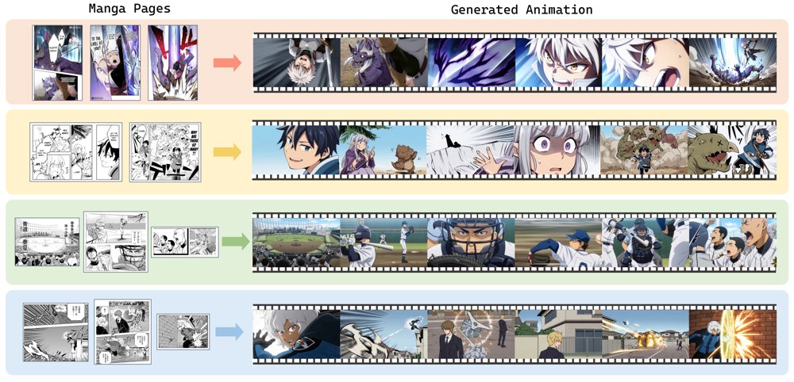
给定几页漫画（左），Manga2Animate 先由多智能体反复打磨出动画脚本与视觉分镜，再据此生成在剧情、角色身份与画风上忠实于原作、镜头间衔接连贯的动画（右）。
解决了什么问题。现有做法要么先把漫画转成文字再讲故事，原作的角色外观与画风在转述中丢失，人物还会在动漫与写实风格之间漂移；要么把漫画页直接喂给视频生成模型，而模型既不知道分镜格的阅读顺序，也不懂对话框的含义，于是讲错剧情，甚至把整页漫画当成视频帧。作者的关键观察是：视频模型已经会做动画，缺的是「读懂漫画」。
方法。Manga2Animate 把任务拆成动画脚本与视觉分镜两个中间表示，每个表示都由创作者智能体生成，再由配对的审稿智能体逐项对照原漫画分镜格审查，共进行 2 轮迭代精修。脚本层按分镜格做组合式挑选（每轮 3 个候选，逐格选优再拼装），分镜层则整体挑选（每轮 3 个候选），并把分镜层发现的问题回传给脚本层，形成双层反馈。最终由视频模型以「整张分镜作为参考」或「分镜格作首帧」两种模式各生成 2 个候选，再由视频审稿智能体择优。
关键结果。在 8 个故事、每个 6 个分镜格的评测集上，主设置（Gemini + Seedance 2.0）的 I2VS 为 0.791，高于 AniMaker 的 0.775、ViMax 的 0.774/0.753/0.771 和 StoryMem 的 0.728，背景一致性 BC 达 0.958，动漫美学分 Waifu-v3 为 5.090、Shadow-v2 为 0.518。37 名参与者的用户研究中，分镜与视频两项均有超过 90% 的投票把「整体最佳」投给该方法。闭源流水线每个故事在脚本与分镜阶段平均调用 34.5 次 API、总成本约 5.65 美元，端到端耗时 24 分 49 秒。值得注意的是，直接把漫画页送进视频模型的方法 DD 高达 13.941（本方法 9.457），但作者强调 DD 只衡量运动幅度，不代表动作正确。
为什么值得看。它表明不必替换视频生成模型，只要补上「读懂漫画」这一环并让每一步都可回溯到原分镜格，就能明显提升改编的忠实度。框架与具体图像、视频后端解耦，开源与商用模型都能接入，脚本和分镜也可以单独复用。
局限 / 存疑。评测集只有 8 个故事、每个 6 个分镜格，规模偏小，且自动指标与人眼判断并非一一对应（如 CSD、CIDS 等与原作风格和角色一致性相关的指标，仍依赖替代骨干网络）。作者也承认：基于随机生成模型的智能体流水线输出会逐次波动，API 可能限制版权或敏感内容，遇到草稿感强、画面杂乱或需要跨页上下文的分镜时仍会误读。
生成式 AI
AI 智能体 Agent / 自主智能
alphaXiv · arXiv
MemT-1.0：让记忆成为模型原生能力
记忆基础模型MemT-1.0用门控DeltaNet-2做token级稳定记忆更新，并用Mixture-of-Storag
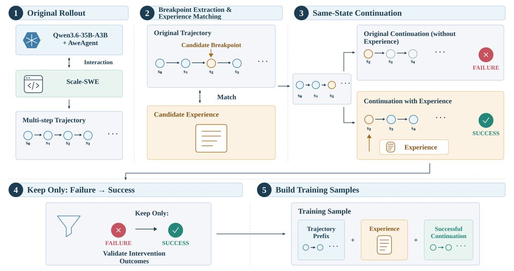
经验条件化训练轨迹的构造：在失败轨迹的断点处插入检索到的经验并从同一状态继续执行，通过任务测试的续写被保留为训练样本。
解决了什么问题。当前大模型的记忆大多依赖外部上下文或外挂检索系统，模型本身无法在长期交互中持续累积并复用信息。作者此前提出的Metis首次把记忆作为基础模型的原生能力，但用token选择方式实现记忆更新，在稳定性和容量扩展上受限。MemT-1.0要解决的就是如何在模型计算内部稳定地写入记忆，并把原生记忆容量做得更大。
方法。MemT-1.0在Metis的动态局部记忆与可训练超记忆结构上做升级，用基于Gated DeltaNet-2的token级稳定更新机制替换原有的token选择。为扩展容量，作者引入Mixture-of-Storage（MoS），通过增加记忆专家数量放大原生记忆。训练上采用继续预训练加后训练的两阶段流水线，配合34B tokens训练数据和自研的高效训练、推理基础设施。
关键结果。在记忆能力评测中，MemT-1.0-Flash与MemT-1.0-Nano平均分分别为50.6和47.0，在参数化记忆方法中排第一、第二，比最强参数化基线高12.5和8.9分。消融显示后训练相对CPT检查点在记忆任务上平均提升约10.69分；MoS从2个专家增至4个专家，在200步时平均分与LoCoMo分别提升0.41和1.42分，到3400步和5500步时平均分提升2.01和2.69分，LoCoMo提升3.25和2.20分。效率方面，Nano相对全上下文推理在64K、128K、256K长度上端到端加速约1.20×、1.86×和3.99×；查询TTFT稳定在约104–112ms，而全上下文在128K和256K时升至约257ms和445ms，对应约2.44×和4.19×的查询首字延迟加速。
为什么值得看。把记忆放进模型计算而非上下文窗口，意味着历史交互可以直接改变模型状态，为在长程任务中积累并复用经验的自我演化智能体提供了可训练的基础形态。
局限 / 存疑。固定大小记忆状态相对交互历史长度为O(1)，细节保真度受限，文本记忆系统在LongMemEval-S和BEAM-1M等基准上仍明显更高。此外经验仍需外部构造，效果依赖经验质量与检索，减少文本上下文也不必然降低整体执行成本。
基础大模型 & 基础模型底层研究
AI 智能体 Agent / 自主智能
AI 工程、推理部署、系统方向
alphaXiv · arXiv
单轮蒸馏加教师强制，稳定多轮图像编辑
提出 MT Forcing，用单轮蒸馏与教师强制指导，缓解自回归多模态模型多轮图像编辑的漂移。

MT Forcing 总览：单轮 DMD 将学生自 rollout 的边际分布对齐单轮教师分布，教师强制指导在参考轨迹上监督历史相关转移，整体训练先 warmup 后联合 DMD 与教师强制正则。
解决了什么问题。多轮图像编辑要求模型按一串指令逐步修改同一张图，但现有方法往往几轮后就出现漂移：视觉质量不稳定，伪影累积、细节退化；内容不一致，未请求区域被改动，先前编辑也保不住。作者将原因归结为训练与推理条件不匹配造成的暴露偏差——训练时条件于参考历史，推理时却递归条件于模型自己生成的历史。
方法。MT Forcing 包含两个互补目标。Single-Turn DMD 把截至当前轮的全部指令重组为一个 bundled prompt，让冻结的单轮教师在源图上一次性完成累计编辑，并用 DMD 损失把学生自 rollout 的每轮输出分布对齐到该教师分布，从而避免递归误差进入监督信号。Teacher-Forcing Guidance 则在参考轨迹上用 flow matching 监督历史相关转移，先做 warmup，蒸馏时再以较低权重作为正则，补足单纯逐轮分布匹配无法保证的跨轮一致性。
关键结果。在 MTEdit-Bench 的 step-wise 子基准（100 个会话、每会话 8 轮）上，Turn 8 时 SenseNova-U1 的 IF 和 CC 分别提升 7.45 和 6.82，SenseNova-U1.5 分别提升 4.65 和 4.46；SenseNova-U1.5 的 DRS 在全程维持 4.20–4.35，基线从 4.09 降至 3.03。其八轮平均 Pixel 从 6.34 降至 0.74，降低 88.4%。消融中完整方法八轮平均为 IF 9.66、CC 8.40、DRS 4.30、Pixel 0.74，优于仅 Single-Turn DMD 的 9.02/7.64/4.12/2.51 和仅 Teacher-Forcing Guidance 的 9.10/7.83/3.92/2.74。
为什么值得看。多轮编辑是交互式视觉创作的核心交互形式，漂移问题直接决定模型能否被连续使用。MT Forcing 把自 rollout 分布匹配与参考轨迹监督结合，为自回归扩散 UMM 的多轮训练提供了一个可复用的训练范式。
局限 / 存疑。单轮教师只约束每轮输出的边际分布，无法唯一确定学生对历史的自回归依赖；λ_TF 较大时输出会变模糊，质量与一致性需要权衡。实验仅覆盖两个 SenseNova 模型和 MTEdit-Bench 的 8 轮、100 会话子基准，论文也未给出训练与推理开销的具体数字。
生成式 AI
alphaXiv · arXiv
3D建模智能体基准：最高79.9分
223个3D任务、2,651条二元评分项，13款模型；GPT-6-Astra 79.9分，但全项通过率仅42.2%。
BlenderWorld 的任务分类与示例：左侧或上方为参考输入，右侧或下方为 GPT-6-Astra 的生成结果。
解决了什么问题。多模态大模型已能通过代码或软件操作创建3D内容，但真实工作流要求从文本、图像、视频和规格文件中推断形状、材质、布局与光照，并交付可编辑工程。现有Blender基准多聚焦单个物体、固定视角或预设几何目标，缺少对开放式真实3D创作请求的覆盖。
方法。作者构建BlenderWorld，含223个任务，覆盖9大类、22子类、16个应用场景，145个任务带图像或视频参考，59个附带Markdown、YAML或JSON规格文件。评测采用证据路由：自动渲染代理选择8个任务相关视角，以1024×1024、64采样Cycles渲染；2,651条任务特定二元评分项分别交给VLM裁判和Agent裁判，后者直接检查.blend工程结构，再融合8维视觉质量分。
关键结果。13款模型中，GPT-6-Astra总分79.9（Rubric 87.3、Dimension 72.6），Opus-5为73.0，GPT-5.6-Sol为67.7；多模态任务上GPT-6-Astra为80.7，高于Opus-5的72.1。全项通过率仅42.2%，Opus-5为25.6%，其余模型最高15.7%。评分项中41.8%依赖渲染证据、58.2%依赖场景检查；裁判与人类总体一致率82.99%，但分差小于10时降至68.57%。
为什么值得看。它把3D创作从单物体、固定视角推进到可编辑工程与多视图一致性评测，为诊断智能体在空间结构、物理接触和迭代修正上的短板提供了统一基线。
局限 / 存疑。每个任务每模型只运行一次，未报告重复运行方差；评分依赖自动裁判，小分差样本与人类一致率仅68.57%，且未引入参考解或几何IoU等确定性指标，结论仍需谨慎。
AI 智能体 Agent / 自主智能
计算机视觉 CV
alphaXiv · arXiv
OPD 可为后续 RL 提供更好起点
研究比较 OPD、SFT 与直接 RL，发现 OPD 初始化在 RL 后平均分最高，但收益不能由 Pass@k 解释。
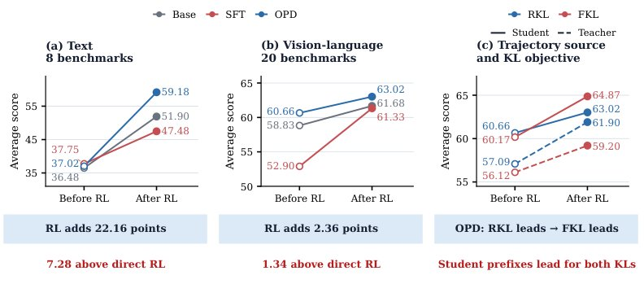
RL 后的性能揭示蒸馏价值：OPD→RL 最终平均最高；学生前缀下 RKL 在 RL 前领先、FKL 在 RL 后反超。
解决了什么问题。RL 的最终表现取决于训练从哪个策略开始，而起始模型的当前准确率未必能预测它后续能学多好。论文追问：on-policy distillation（OPD）除了提升蒸馏后即时准确率，是否还能为后续 RL 提供更好的起点。
方法。作者在同一学生和同一 RL 配置下比较 Base→RL、SFT→RL 与 OPD→RL：文本用 Qwen3-8B/32B，视觉语言用 Qwen3-VL-8B/32B。主 OPD 采用 reverse KL，并在学生自生成前缀上匹配完整教师分布；另在 VL 上比较 reverse/forward KL 与学生/教师轨迹。诊断包括 Pass@k、教师 top-1 一致率、top-20 JS 散度和词表位置熵。
关键结果。文本 8 个基准上，OPD→RL 最终平均 59.18，高于 Base→RL 的 51.90 和 SFT→RL 的 47.48；OPD 训练前仅 37.02，较 Base 的 36.48 高 0.54 分，RL 后差距扩至 7.28 分，OPD 在 RL 中提升 22.16 分。VL 20 个基准上 OPD→RL 为 63.02，高于 61.68 和 61.33，RL 中再涨 2.36 分。学生轨迹下 FKL 从 60.17 到 64.87，最终比 RKL 的 63.02 高 1.85 分；教师轨迹 RKL/FKL 最终为 61.90/59.20。
为什么值得看。这说明蒸馏方案不该只看蒸馏后分数，而应看后续 RL 的最终表现；在本比较中，若 OPD 后接 RL，forward KL 比 reverse KL 更合适。
局限 / 存疑。结论基于 Qwen3/Qwen3-VL 8B 学生与 32B 教师的单一 GRPO 配置，VL 平均仅比直接 RL 高 1.34 分且任务间不均。论文把收益归因于教师分布对齐与保留不确定性，但这仍是观察性证据，未分离两者的因果贡献。
基础大模型 & 基础模型底层研究
强化学习 RL & 序列决策
alphaXiv · arXiv
EgoX：单次前向重建第一人称世界
上交等提出 EgoXperience：50 小时带几何对齐标注的第一人称数据，加一个模型一次前向重建相机、深度、双手与物
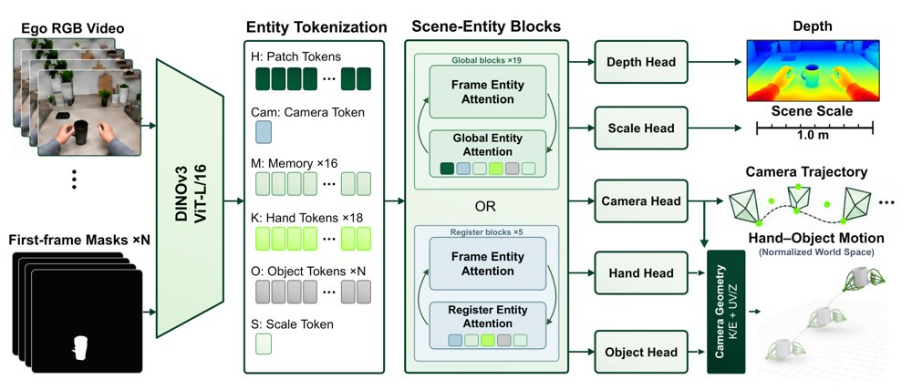
EgoX 概览：共享的场景与实体特征支撑联合重建，预测的相机与尺度把所有输出放入同一度量世界坐标系。
解决了什么问题。第一人称视频要还原人的活动，不能只分别恢复相机运动、场景几何和手与物体的交互，因为这些量必须落在同一个世界坐标系里彼此吻合。已有方法通常只输出其中一部分，拼接时要处理尺度与坐标系不一致；而已有数据集多依赖标定多相机或动捕系统，难以在多样真实环境中大规模采集联合标注。
方法。作者先构建 EgoX-Engine 自动标注流程：用标定双目估计度量深度、用 SLAM 恢复相机轨迹，结合预扫描物体模型、首帧掩码、FoundationPose 跟踪与深度一致性校验得到物体六自由度轨迹，并把相机、场景、手、物体统一到同一度量世界坐标系。基于该流程采集 EgoX-Data-6M（50 小时、101 个刚体物体、270 个任务脚本），并留出 1 小时作 EgoX-Bench。模型 EgoX 以 DINOv3 特征为输入，引入相机、左/右手、物体 token 做视角内与跨视角注意力，再通过预测的相机位姿和一个序列级尺度因子把场景点、手腕与物体位置显式组合到首帧相机坐标系中联合监督。
关键结果。在四个基准上，EgoX 相对最强基线把相机 nATE、手部 W-MPJPE 与深度 AbsRel 分别降低 68.9%、65.6% 和 42.9%，物体位姿 AUC-S50 提升 28.0%。具体数值：HOT3D 上 W-MPJPE 由 HaWoR 的 56.30 mm 降至 38.89 mm，EgoX-Bench 上由 WiLoR+SLAM 的 328.81 mm 降至 113.24 mm；EgoX-Bench 物体 AUC-S50 为 76.59，对比 GigaPose+MegaPose 的 59.80；HOI4D 相机 nATE 为 0.0066，VGGT-Ω 为 0.0212；EgoX-Bench 深度 AbsRel 为 0.0460，VGGT-Ω 为 0.0806。150 帧推理耗时 14.60 秒（10.28 FPS）。
为什么值得看。它把「数据采集—自动标注—联合建模—基准评测」做成一条可复制的链路，让第一人称视频里的相机、场景、手和物体第一次在同一个度量世界坐标系中被端到端预测，这对具身智能和机器人示教类下游任务很关键。
局限 / 存疑。方法假设物体是刚性的，也不预测物体网格，面对关节物体或可变形物体会失效；相机精度并非全面领先——HOT3D 与 EgoX-Bench 上 VGGT-Ω 更好，H2O 上 DA3 Nested 更好。此外标注仍依赖 31 相机穹顶、AprilTag 与专用头戴装置，规模化成本与跨环境泛化仍有疑问。
计算机视觉 CV
alphaXiv · arXiv
DScout：因子分解指导扩散投机解码的训练与推理
研究把位置级损失和吞吐拆成可分析的因子，用来指导扩散草稿模型的训练与推理配置，在六个基准上把平均加速比最高提到 4.14
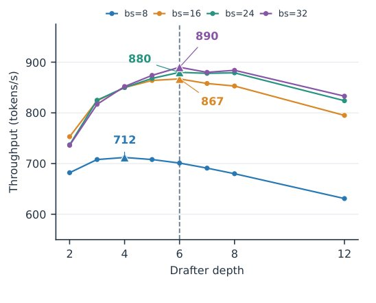
累积配方消融（9t9d），标签显示相对上一步的 MAT 增量。
解决了什么问题。投机解码靠草稿模型并行提议、目标模型并行验证来加速大模型推理，扩散草稿模型还能进一步并行生成提议。但验证只接受连续前缀，一旦前缀早期被拒，后面预测正确也没用；所以提议容量变大、平均接受 token 数（MAT）变高，都不必然带来更高吞吐。若每轮延迟同步上升，MAT 提升也可能被抵消。
方法。训练侧，DScout 把逐位置损失分解为包含、加权和预测三项，据此设计和组合混合视界训练、块内解除掩码与接受度加权损失，让监督信号对齐前缀接受。推理侧，DScout 把吞吐分解为 MAT 与每轮延迟之比，用这一比值指导目标条件注入深度、草稿深度和推理块大小选择，为每个工作负载找高吞吐配置。
关键结果。在六个基准上，DScout 在 Qwen3-4B 和 Qwen3-8B 上相对自回归解码分别取得 3.84 倍和 4.14 倍的平均加速，比当前最优基线方法的平均加速比再高 9.1% 和 7.1%。跨模型与并发设置，其推理配置策略在 DScout 固定配置之上最多再带来 9.75% 的平均加速。
为什么值得看。该工作指出投机解码的关键指标是 MAT 与每轮延迟之比，而非 MAT 或提议容量本身，为扩散草稿模型给出了可复用的训练目标与按工作负载选配置的思路。
局限 / 存疑。验证只覆盖 Qwen3-4B 与 Qwen3-8B 两个模型和六个基准，摘要未给出硬件、绝对延迟和并发设置的细节，泛化性与实际部署收益仍待确认；此外前缀接受机制带来的早拒绝浪费并未被消除，只是被训练目标部分缓解。
基础大模型 & 基础模型底层研究
AI 工程、推理部署、系统方向
alphaXiv · arXiv
随机热力学的极小极大风险下界
论文将统计决策论引入随机热力学，用Le Cam两点法导出极小极大风险下界，并连接分类、分布估计与不确定性关系。
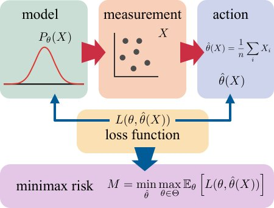
统计决策论示意图：真实参数θ生成分布Pθ(X)，观测X后选择动作θ̂(X)，损失L衡量θ与θ̂(X)的差异，极小极大风险M是最小化最坏情形期望损失后的损失值。
解决了什么问题。Cramér-Rao不等式把参数估计的不确定性压在无偏估计的方差上，热力学不确定性关系也大多沿用这一视角。分类、假设检验和一般损失函数下的决策问题，缺少统一的热力学下界。
方法。作者在连续时间马尔可夫过程上，以轨迹为观测、以b-度量损失为准则定义极小极大风险，并用Le Cam两点法把最坏参数选择缩减到两个参数，得到用全变差、Bhattacharyya系数或KL散度表示的下界。再利用Bhattacharyya系数与动力学活度的不等式，把下界写成两个参数对应动力学活度之和；可观测量版本也按同样思路处理。
关键结果。在二状态马尔可夫链的稳态分布估计例子中，L2损失的极小极大风险下界为 1/(8√τ)（τ→∞），即按 τ^{-1/2} 衰减。计数可观测量的相对p阶偏差下界为 p^p/[(p+1)^{p+1}(√(a_ss τ))^p]（p>1，τ→∞），p=2时化为 Var/E^2 ≥ 4/(27 a_ss τ)；K类分类的0-1损失下界为 1/2(1-√(1-exp[-τ(aθ1(0)+aθ2(0))]))。作者还用高斯均值例子说明Le Cam下界为 4σ²/(27n)，小于Cramér-Rao的 σ²/n。
为什么值得看。它把分类、分布估计和不确定性关系纳入同一决策论框架，并允许平方损失之外的b-度量损失，为热力学系统里更一般的推断任务提供可计算的下界模板。
局限 / 存疑。Le Cam两点法通常比Cramér-Rao更悲观：高斯例子中常数4/27明显小于1；文中计数可观测量的方差界4/(27a_ssτ)弱于已知的1/(a_ssτ)，熵产生与时间反演可观测量的界也弱于文献[11,12]。此外，把Bhattacharyya系数转成动力学活度的关键不等式要求两个过程的初始分布相同，分类下界只取两个类的活度之和，需再对类对最大化。
因果推断、统计学习、理论机器学习
alphaXiv · arXiv
用互联网视频预训练机器人局部导航
ScaleNav 以三段式训练把网络第一视角视频的导航先验转为动作块：仿真成功率 94.9%，真机 83.3%。
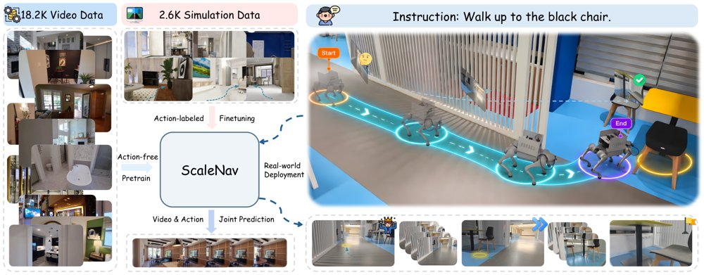
ScaleNav 概览：先用无动作标签的互联网第一视角视频预训练导航先验，再用带动作标签的仿真数据做动作对齐与联合微调，模型同时预测未来观测和动作块以跟随导航指令，右图为在真实四足机器人上的部署。
解决了什么问题。语言条件局部导航要求机器人走到初始视野中由文本指定的目标并停下，端到端策略需要多样数据才能跨场景泛化，但真实机器人动作数据采集成本高，而仿真数据又存在仿真到现实（sim-to-real）差距。已有利用互联网第一视角视频的工作多依赖估计轨迹、几何目标或潜在动作等中间监督，这些中间量带来的误差会传导进策略学习。
方法。作者提出 ScaleNav，用共享 DiT 主干的世界-动作模型同时预测未来观测和动作块（每块 9 个动作，动作是平面位移加偏航变化）。训练分三阶段：先在约 18.2K 段带导航指令的互联网第一视角视频上做指令条件视频预训练（无动作标签），再用约 2.6K 条带动作标签的 Habitat-GS 仿真片段做动作对齐（冻结大部分 DiT，只训练动作头与自注意力层），最后联合微调全部可训练组件。推理时模型以初始帧锚点和最近两个块的历史为条件，自回归地预测并执行动作块，直到停在目标处。
关键结果。在单视角改版的 Short-Horizon OVON（524 条 episode、36 个 HM3D 场景）上成功率为 86.5%、SPL 71.3%；在自建 HabitatGS-LN（157 条 episode、45 个留出场景）上成功率 94.9%、SPL 86.1%，均高于 LocateAnything+NavDP、LocateAnything+ApexNav、StreamVLN 和 Uni-NaVid 等基线。相同仿真动作数据下加入互联网视频使两个基准成功率分别提升 5.3 和 4.5 个百分点，摊销推理延迟为每个执行动作 76 ms。真机 Unitree Go2 在展厅、休息区、办公区共 60 次试验，总体成功率 83.3%，无互联网视频的变体为 65.0%。
为什么值得看。它提供了一条不依赖中间动作标注、也不用推理时外部规划器的路线，把大规模人类第一视角视频直接变成可执行的导航动作输出，说明视频预训练对机器人局部导航确有可测量的增益。
局限 / 存疑。作者自述评估只覆盖室内、且目标是初始视野中可见的物体，室外环境和区域级目标的泛化尚未验证；单视角改版 OVON 的结果与原三视角协议不可直接比较，真机仅 60 次试验。消融还显示去掉动作对齐或视频回放后成功率分别为 93.6% 和 94.3%（完整模型 94.9%），增益有限，而用 Depth Anything 3 估计伪动作标签联合训练反而降到 73.9%，作者归因于位姿估计误差。
基础大模型 & 基础模型底层研究
AI 智能体 Agent / 自主智能
计算机视觉 CV
机器人 & 具身智能
alphaXiv · arXiv
Kronecker Delta 规则改造长上下文线
作者提出 KronLSTM，用 Kronecker Delta 规则扩展矩阵记忆的写入维度，在长上下文检索中领先基线。
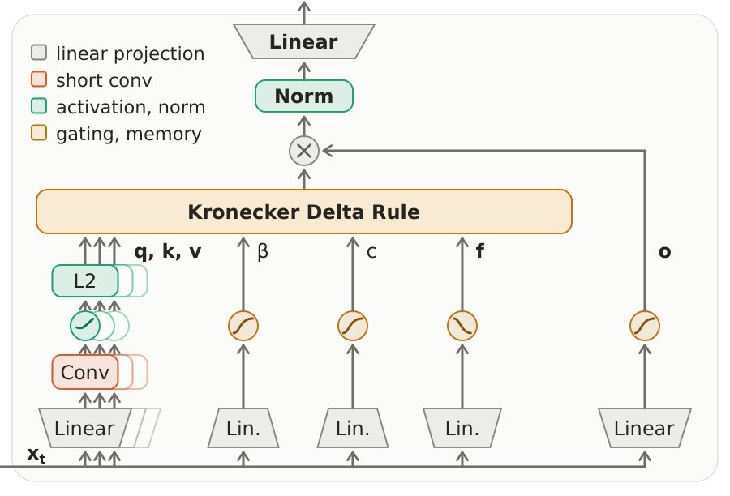
KronLSTM 模块（KronLSTM block）的架构示意图。
解决了什么问题。线性注意力把历史压进固定大小的状态，DeltaNet 一类方法用 Delta 规则做写入，但每次更新只落在 d 维方向上，而记忆本身是 d² 维的，能精确满足的关联数量受限。上下文一长，关联数量而非单次拟合速度成为瓶颈，干扰随之累积。作者用干扰分析论证：在长上下文里，问题主要出在能存多少条关联，而不是存得多快。
方法。论文把 Kronecker Delta 规则引入矩阵记忆的更新，使每一步写入分布在 d² 维记忆的各个方向上，而不是集中在 d 维子空间，并沿用门控机制做稳定化。为了让这套更新可训练，作者给出分块并行（chunkwise-parallel）的实现，并在架构上以 mLSTM 为基础构成 KronLSTM 模块，既可单独作为纯线性注意力模型，也可与滑动窗口注意力组成混合模型。状态跟踪能力则通过把 β_t 设为 2σ(·)∈(0,2) 来获得，做法沿用 DeltaNet 的思路。
关键结果。在 1.5B 模型、2k 上下文的真实回忆任务上，KronLSTM 取得最佳平均准确率，并在纯线性注意力与混合模型两类中都是六个任务里三项最优；使用 SWA 的混合模型整体提升 5 到 9 个准确率点。NIAH 测试中（8k 预训练，评测 4k/8k/16k），混合模型下 KronLSTM 在 S2 的 4k 上比 GDN-2 与 Mamba-3 高 15.2 个点；MQ 上领先幅度从 4k 的 2.4 个点扩大到 16k 的 4.1 个点；MV 上 4k 时落后最佳方法 GDN 3.5 个点，但 8k 与 16k 分别领先 1.1 和 3.8 个点。长上下文扩展实验中，作者从 75B token 处分支、用 32k 序列长度在 ProLong-64K 衍生的长文档混合数据上再训 25B token，两个模型的困惑度都改善约 4 个点，KronLSTM 在六个回忆任务中五个更好；32k 时两个模型检索准确率都明显下降，KronLSTM 仍在五个任务上保持领先。400M/40B 规模上，KronLSTM 相对 mLSTM 平均提升 2.1 个点，LAMBADA 困惑度从 43.40 降到 28.28。
为什么值得看。它把「记忆容量」而非「更新速度」当作长上下文线性注意力的核心矛盾，给出了一条把写入铺开到 d² 维记忆的具体路径，并在 1.5B 规模上验证了随上下文变长而扩大的优势。对需要在长文档上做检索、又不愿承担全注意力成本的模型设计来说，这是一个可直接替换 DeltaNet 类更新规则的选项。
局限 / 存疑。收益伴随代价：KronLSTM 每步写入在 d² 维记忆的每个方向上都比 DeltaNet 温和 d 倍，也就以 d 倍慢的速度逼近最小二乘记忆，容量与收敛速度是同一笔权衡。实验上并非全面占优：NIAH 的 S1 任务上 GDN-2 始终更强，MV 在 4k 时仍落后 3.5 个点；32k 扩展后两个模型的检索准确率都相对 16k 大幅下滑。状态跟踪只在 parity、S₃ 置换与模运算上做了评测，论文未给出具体数字，400M 规模上各模型差距也已明显收窄。
基础大模型 & 基础模型底层研究
alphaXiv · arXiv
把几何模型的注意力蒸馏进视频扩散模型
GAD 把冻结几何模型 VGGT-Ω 的跨帧对应关系蒸馏进视频注意力，按噪声步选择监督层，推理不增加任何开销。

冻结的几何教师从干净视频中提取的对应关系在去噪过程中引导视频模型的注意力，这种监督只在训练期加入，推理流程保持不变。
解决了什么问题。视频扩散模型能生成观感不错的短片，却难以在视角变化和物体运动下保持场景几何与物体结构。作者进一步发现，视频注意力的跨帧响应经常分散在多个区域，即便场景结构已经可辨认，也无法可靠地关联同一场景元素。他们还观察到，可辨认的场景结构在高噪声时先出现在较深层、低噪声时先出现在较浅层，这为「在哪一层监督」提供了依据。
方法。GAD 用冻结的几何基础模型 VGGT-Ω（1B，取零基第 13 层第 10 个注意力头）在干净视频上抽取跨帧对应关系，并把源 token 分配给目标帧的总注意力质量作为可靠性权重，对可能被遮挡或不可见的匹配降权。训练时按模型噪声时间步选择学生网络的一层（t<850 用 L5、850≤t<950 用 L15、t≥950 用 L25），在该层上同时施加帧对内的 pairwise 监督与跨多帧的 trackwise 监督，与原有 flow-matching 损失联合优化。推理阶段只使用训练后的视频模型，不加载教师、聚合 MLP 或对应关系缓存。
关键结果。在 Wan2.2 5B 上，GAD 在 RealEstate10K 与 DL3DV-10K 两个长程基准上的跨帧匹配命中率相对提升至少 30%：RealEstate10K 的 M_rate 从 0.257 升到 0.335，M_dist 从 48.90 降到 38.85 像素，旋转距离 R_dist 从 9.573 度降到 4.890 度。Wan2.1 14B 上两个数据集七项指标全部为最佳，DL3DV-10K 的 R_dist 从 5.497 降到 3.039、M_rate 从 0.365 升到 0.393。生成时长方面，5 秒的 M_rate 由 0.529 升到 0.571、15 秒由 0.257 升到 0.335。推理成本基本不变，OmniWorld-Game 上 Wan2.2 5B 耗时 69.60 秒对 70.44 秒、峰值显存同为 34.85 GB。训练使用 35K 片段、832×480 分辨率、10 个 epoch、32 张 A800。
为什么值得看。跨帧对应是视频世界模型、机器人规划与自动驾驶仿真的基础能力，GAD 用纯训练期监督换来更好的几何与动态一致性，部署时不需要额外模块或采样开销。
局限 / 存疑。对应目标的质量受制于 VGGT-Ω 的匹配能力与空间分辨率，层路由只依赖噪声步且在训练全程固定，实验也只在 Wan 系列双向模型上验证，未涉及自回归生成，5 秒与 10 秒设置下 FID/FVD 还出现小幅回退（5 秒 FID 由 26.85 升至 27.63）。消融显示若去掉置信度加权，匹配命中率会掉到 0.230，反而低于 Wan 基线的 0.257，说明教师注意力峰值本身并不可靠。
生成式 AI
计算机视觉 CV
alphaXiv · arXiv
AnyGoal：世界模型的组合泛化缺口
新基准用目标偏移任务检验世界模型能否重组熟悉的状态与动作因子，发现当前模型普遍失败。
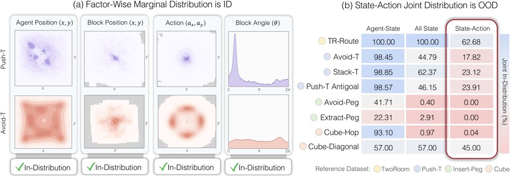
AnyGoal 针对组合缺口：(a) 以 Push-T 为参照，用 KDE 对 Avoid-T 做逐因子支撑检查，灰色区域表示密度低于峰值参考密度的 1%；(b) 用 KDE 估计各目标变体与基础任务训练分布的重叠。
解决了什么问题。世界模型要可靠用于规划和模拟，必须在专家轨迹之外的状态—动作组合上保持动力学正确。但数据覆盖、动力学泛化与下游规划性能之间的关系仍缺乏系统研究。
方法。作者构建 AnyGoal 基准与开源库，从常用世界模型环境派生目标偏移任务变体：单个状态因子和动作仍在训练支撑内，但其组合在专家轨迹中欠代表。他们评测多种环境与世界模型家族，并用 oracle 状态预测器、端到端模型、rollout 误差、MPC 成功率和干预动作敏感性等分析失败来源。
关键结果。在多个环境与模型家族中，目标偏移下当前模型一致出现失败；接触丰富变体的 rollout 误差常增大 1 到 3 个数量级，即使输入 oracle 状态，而自由空间变体退化小得多，部分任务持平或改善。论文还报告 5 步与 25 步预测误差，模型统一采用 frame skip 5、history length 3（Sensorimotor-WM 保持 history length 1）。图注用 KDE 做支撑检查，并将密度低于峰值参考密度 1% 的区域标灰；所给材料未列出绝对 MPC 成功率数值。
为什么值得看。它把世界模型评测与组合泛化连接起来，提供可控基准来区分表示失败、动力学失败和规划指标错位。若动力学能复用局部机制，就不需要覆盖所有状态—动作组合，这为离线数据下的规划研究给出更可检验的方向。
局限 / 存疑。局限在于基准基于常用世界模型环境，任务与模型家族覆盖仍有限；rollout 误差在不同预测空间（潜空间 vs 像素/重建空间）不可直接比较，作者也明确不据此给模型家族排名。结论还依赖边际支撑检查与 oracle 状态设定，接触丰富任务在更真实场景中的可迁移性仍待验证。
AI 智能体 Agent / 自主智能
强化学习 RL & 序列决策
alphaXiv · arXiv
生成式机器人策略的前向过程强化学习微调
RoboFFT 用前向加噪的匹配损失构造替代策略比率，使扩散与流策略无需显式似然即可做 PPO 式在线微调。

RoboFFT 流程：先用遥操作数据以分数/流匹配损失预训练策略，用 SDE 采样器在线生成动作并接收环境奖励，再对动作前向加噪、复用匹配损失作为替代似然完成 PPO 式更新。
解决了什么问题。扩散与流匹配策略能从示教中学到多模态动作分布，但纯模仿学习受限于示教质量、协变量偏移与部署时的状态覆盖不足。用在线强化学习继续提升是自然选择，然而这类策略的动作似然不可解析，PPO 等策略梯度目标难以直接套用。已有做法把逆向去噪链建模为多步 MDP，但计算与显存开销大，长采样链还容易带来梯度不稳。
方法。RoboFFT 对 rollout 采样得到的动作做前向加噪，复用预训练时的加权分数/流匹配损失作为替代负对数似然，用 exp(旧策略损失−当前策略损失) 构造策略比率，接入 PPO 的裁剪目标。针对确定性流采样缺乏随机性，作者向采样过程注入噪声，改成 Euler-Maruyama SDE 采样器以提供可控探索；该采样器只用于采集动作，不参与似然计算。实现上还加入蒙特卡洛估计、比率温度标定，以及针对扩散策略的 Δlog-SNR 加权、锚点正则和负优势折扣等稳定化设计。
关键结果。在 Robomimic 的 Lift、Can、Square、Transport 四个稀疏奖励任务（state 与 pixel 两种输入）上，RoboFFT 的成功率与逆向过程基线相当或更好，在 Square、Transport 等更难任务上提升更稳。效率方面，RoboFFT-F 相对 ReinFlow 取得平均 1.53× 的单轮训练加速，RoboFFT-D 在四个 state 任务上相对 DPPO 平均加速 38.0×（其蒙特卡洛样本数取 N_mc=16）。在 LIBERO-Object 与 LIBERO-Spatial 上，该方法可微调 3.3B 参数的 π0 VLA 策略并优于预训练策略、与 πRL 相当。真机四任务各测试 20 次：pick eggplant 由预训练 12/20 提升到离线 18/20、在线 20/20；peg insertion 10/20→19/20→20/20；Pour 9/20→15/20→18/20；cabinet retrieval 5/20→14/20→17/20；在 pick eggplant 上同数据预算的 BC Agg. 仅 14/20、DRWR 为 12/20。与 ReinFlow 式闭式参考比率相比，替代比率的 Spearman 秩相关约为 0.2，但相对误差在训练末期对至少 90% 的动作块低于 5%。
为什么值得看。它把 RL 微调的目标拉回到与生成式预训练一致的匹配损失上，无需对整条去噪链反传即可做 PPO 式更新，为扩散、流与 VLA 策略提供了一条更省算力、更稳的后训练路径。
局限 / 存疑。匹配损失只是真实对数似然的替代，其尺度随噪声调度、动作维度和策略结构变化，仍需温度标定等额外校准，且与参考比率的排序相关性仅约 0.2，说明二者并不严格对应。框架依赖 on-policy PPO，数据效率有限、无法充分复用历史轨迹，真机部署需迭代采集与离线重训，单机器人场景下仍较耗时。
强化学习 RL & 序列决策
机器人 & 具身智能
alphaXiv · arXiv
解耦场景结构表征，让自监督深度估计可扩展
MaSS 将深度编码器与冻结 DINOv2 双向交互，解耦上下文与结构表征，用场景布局对比学习判别结构，使自监督深度在混
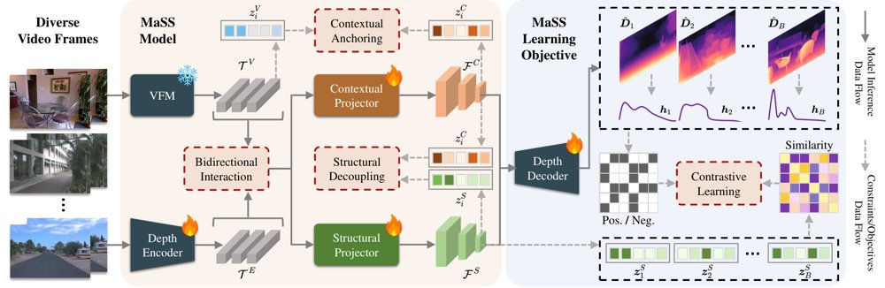
MaSS 框架总览：深度编码器与冻结的预训练 VFM 通过双向交互模块相连，交互后的 VFM 特征经一对锚定—解耦投影器生成无坍缩的上下文与结构表征。
解决了什么问题。自监督单目深度估计理论上可随无标注数据扩展，但现有方法多在单一数据集上训练，一旦混合室内、室外、动态与恶劣天气数据联合训练，性能反而下降，也无法泛化到分布外场景。作者发现，根源在于自监督信号本身噪声大，网络转而依赖数据集特有的结构偏置：深度编码器最粗的高层特征并不编码前后景关系与透视几何，而主要反映数据集偏置，不同域要求的偏置互相冲突。
方法。MaSS 用 ViT-Adapter 式的双向交互模块把可训练深度编码器与冻结的 DINOv2 ViT-B/14 连接起来，再用一对“锚定—解耦”投影器，把交互后的 VFM 特征分成上下文表征与结构表征两条通路：前者以原始 VFM 特征的样本间语义关系为锚以保持语义，后者被约束与前者解耦，专门承载几何信息。为了让结构通路学到可迁移的场景布局，作者设计场景结构判别目标：先将预测深度图下采样 8 倍，用 20 个软分箱的直方图与对称 KL 散度衡量样本间布局差异，再以阈值 γ=0.95 构造正样本集，用多正样本 InfoNCE（温度 0.1）做对比学习。
关键结果。在 KITTI、DDAD、NYUv2、nuScenes 四个数据集上单独训练时，MaSS 的 Abs Rel 分别为 0.094、0.128、0.109、0.139，均优于此前自监督方法；在混合域训练下进一步降至 0.092、0.125、0.104、0.134（δ1 分别为 0.913、0.862、0.890、0.852）。作为对照，DCPI-Depth 混合训练后 NYUv2 的 Abs Rel 从 0.151 恶化到 0.331。在八个零样本数据集上，混合训练模型在 Waymo、DrivingStereo、Cityscapes、DIML 的 Abs Rel 为 0.123、0.100、0.103、0.104，在 DIODE 为 0.289。模型 93.2M 参数、81.6 GFLOPs、训练数据 150K，单张 RTX 4090、batch size 6 约需 2.5 天；再增加 5 万 TartanAir 样本后，作者报告在更具挑战的分布外域上 Abs Rel 与 δ1 平均改善 4.3% 与 3.0%。
为什么值得看。自监督深度的核心卖点本应是无标注数据越多越好，但混合域训练一直掉点；这项工作把“数据集结构偏置”指认为可扩展性的具体瓶颈，并给出可操作的解耦加对比学习方案，为从无标注视频训练深度基础模型提供了一条不同于堆数据与换更强主干的路径。
局限 / 存疑。在标准室内数据集上，MaSS 仍明显落后于监督深度基础模型：iBims-1 的 Abs Rel 为 0.107，而 Depth Anything V2 为 0.045；SUN-RGBD 为 0.127 对 0.062；7-Scenes 为 0.120 对 0.074。可扩展性证据也只到 200K 样本，远小于 Depth Anything V2 的 62M，作者自己称仅为初步证据；此外训练需先跑一个 epoch 的初始化阶段，且 Median 与 LSQ* 对齐协议的差异会影响跨方法比较。
计算机视觉 CV
alphaXiv · arXiv
灵巧操作仿真基准 HandsOn 发布
含5臂6手、约200个资产、1.8万条演示的66任务仿真基准；最佳多任务策略Core-50成功率29.1%。
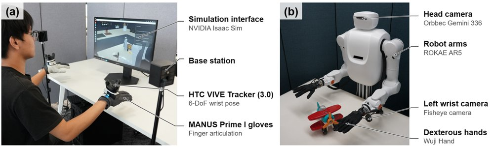
人类演示采集流程：手套记录手指关节运动，腕部追踪器记录手部轨迹；重定向后的指令驱动机器人仿真臂手系统，同时操作者观察场景。
解决了什么问题。灵巧操作要求在整个执行过程中控制接触状态的变化，例如移动鼠标时不能提前触发点击，拧两个旋钮时要同时让两者保持目标位置。现有灵巧操作基准虽在任务与本体覆盖上有所扩展，但人类演示规模小，且很少保留专门用于评测的任务。因此，缺少一个能同时考察跨本体、跨物体泛化与可靠执行完成度的共享实验基础。
方法。作者构建了 HandsOn 可组合仿真平台，支持5种机械臂、6种灵巧手和约200个刚体、铰接体与可变形资产，并在随机化场景中评测。基准包含18,000条筛选后的人类演示（约56小时、三路同步视角），以及66个经人工核验的任务：Core-50 用于基于演示的学习与执行测试，Transfer-16 则在不提供目标任务训练演示的情况下考察资产与关系迁移、技能组合和可变形物体操作。评测覆盖单任务 DP、五个 VLA 模型、三个 WAM 模型，以及以提示方式驱动的 GPT-6 控制器。
关键结果。在 Core-50 上，训练过的最佳多任务策略成功率为29.1%；八万多任务检查点合计评测超过40,000个 Core-50 episode（训练策略总计45,000个 episode）。按八检查点汇总，推、铰接操作和抓放的成功率在35%到51%之间，而工具使用与精密装配仅为2%到3%。在 Transfer-16 上，按有序进度排名，OpenWAM 的12.9%分别比 HY-Embodied、LingBot-VLA 和 Spatial Forcing 高6.0、3.7和2.6个百分点。未经基准微调的 GPT-6 使用 move_eef 控制手掌与手指，在660次试验中仅成功29次，Core-50 为5.2%、Transfer-16 为1.9%。演示数量约为代表性灵巧操作基准人类轨迹数的5.7到16.4倍。
为什么值得看。该基准将本体、环境与任务结构当作可配置的实验变量，为比较不同策略在何处失效提供了统一的对照基础。其诊断显示，失败集中在建立接触、协调动作和维持已达成的目标；这提示需要显式建模接触角色、双手依赖与任务进度的方法。
局限 / 存疑。真实机器人迁移只给出了定性演示视频，论文未给出量化的 sim-to-real 数字。并且 GPT-6 是输入与调用预算都不同的提示式参考，不能与训练策略直接比较；DP 也仅是描述性参考，其目标分布并未对齐。作者还指出，需要做匹配的 harness 消融实验，才能量化各组件（高层规划、状态估计与反馈技能）的贡献。
机器人 & 具身智能
alphaXiv · arXiv
期刊
Nature Machine Intelligence · Towards understanding and monitorability of reasoning LLMs
前沿大模型被训练为以逐步方式解题，并用人类可理解的自然语言生成推理文本。但摘要指出，这些推理 token 并非对模型内部计算的准确解释，这给可监控性带来了挑战。该文因此聚焦于对推理型大模型的理解与监控问题。
Nature · Bundle water safeguards into critical-mineral licences
《Nature》刊文呼吁将水资源保护措施捆绑进关键矿物许可审批。对依赖关键矿物的机器学习硬件供应链而言，这意味着资源治理与采购风险需要一并纳入考量。文章强调，关键矿物开发许可不应只关注矿产供给，还应同步设置水保障要求。